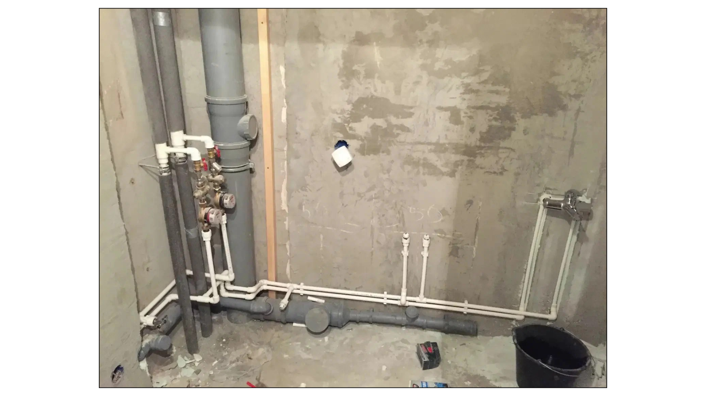

Анализируем чертежи систем водоснабжения и водоотведения
Инженерные сети и системы – это основа любого здания. Без них невозможно обеспечить комфорт, безопасность и работоспособность объекта. Впереди большой урок, в ходе которого вы разберетесь, какие бывают системы инженерно-технического обеспечения, как они классифицируются и взаимодействуют между собой. А также закрепите понимание устройства инженерных коммуникации зданий, какие нормативные требования к ним предъявляются и как они влияют на безопасность и комфорт эксплуатации.

Начнем урок с просмотра видео, в котором я рассказала, как правильно анализировать чертежи раздела ВК. Вы всегда можете вернуться в начало урока и повторить материал, если какие-то вопросы останутся непонятными.
Теперь давайте разберемся в некоторых определениях. Нам важно понимать, что относится к сетям, а что к системам, как минимум для того, чтобы определить необходимость оформления акта освидетельствования участков сетей инженерно-технического обеспечения.
Система инженерно-технического обеспечения – одна из систем здания или сооружения, предназначенная для выполнения функций водоснабжения, канализации, отопления, вентиляции, кондиционирования воздуха, газоснабжения, электроснабжения, связи, информатизации, диспетчеризации, мусороудаления, вертикального транспорта (лифты, эскалаторы) или функций обеспечения безопасности.
Сеть инженерно-технического обеспечения – сеть электро-, газо-, тепло-, водоснабжения и водоотведения, сеть связи и другие сооружения, предназначенные для инженерно-технического обеспечения здания и (или) сооружения, а также совокупность таких сетей.
Системы инженерно-технического обеспечения
Смотрите в памятке ниже перечень систем инженерно-технического обеспечения
Материал к уроку (PDF)
Системы инженерно-технического обеспечения
PDF получен с исходной страницы. Поля для названия организации и других персональных данных оставлены пустыми.
Эти системы могут быть автономными (работать внутри отдельного здания) или подключаться к городским инженерным сетям.
Основные виды инженерных сетей:
- Электросети – линии электропередачи, трансформаторные подстанции, распределительные щиты.
- Теплосети – магистральные и внутриквартальные теплотрассы.
- Газовые сети – трубопроводы низкого, среднего и высокого давления.
- Водопроводные сети – магистральные и распределительные водоводы.
- Канализационные сети – ливневая и хозяйственно-бытовая канализация.
- Сети связи – телефонные линии, оптоволоконные сети, интернет-каналы.
Эти сети могут быть внешними (находиться за пределами здания и обеспечивать подключение объекта к централизованным системам) и внутренними (распределенными внутри здания).
Встроенное упражнение — сохранен текст
Статическое представление
TestCards
Текстовые фрагменты упражнения извлечены с исходной встроенной страницы. Проверка ответов и анимация здесь не работают.
- Что входит в систему инженерно-технического обеспечения?
- Только системы отопления, водоснабжения и канализации
- Любая система, обеспечивающая подачу воды или газа
- Системы, обеспечивающие функции водоснабжения, вентиляции, электроснабжения, связи, безопасности и др.
- Только внутренние инженерные системы здания
Взаимодействие инженерных систем и сетей
Для эффективного функционирования здания все инженерные системы должны быть согласованы между собой.
Пример
- Электроснабжение необходимо для работы насосов водоснабжения и систем отопления.
- Системы вентиляции и кондиционирования требуют подключения к электросетям и могут быть связаны с системами отопления.
- Водоснабжение и канализация должны обеспечивать подачу и отведение воды с учетом пожаротушения.
Внутренние системы водоснабжения
Система внутреннего водопровода – это комплекс трубопроводов и устройств, которые обеспечивают подачу воды от наружных сетей к сантехническим приборам, технологическому оборудованию и пожарным кранам в пределах здания или группы зданий.
Виды внутренних систем водоснабжения
В зависимости от назначения здания предусматриваются три основные системы внутреннего водоснабжения:
- Хозяйственно-питьевое водоснабжение. Обеспечивает подачу воды для бытовых и санитарных нужд жителей и персонала зданий. Качество питьевой воды должно отвечать действующим гигиеническим нормативам и санитарным правилам. ГОСТ Р 51232-98 устанавливает требования к организации и методам контроля качества питьевой воды.
- Производственное водоснабжение. Предназначено для технологических процессов, требующих воды определенного качества. Характеристики воды устанавливаются индивидуально в зависимости от типа производства.
- Противопожарное водоснабжение. Обеспечивает подачу воды к пожарным кранам и спринклерным системам для тушения пожаров.
Встроенное упражнение — сохранен текст
Статическое представление
TestCards
Текстовые фрагменты упражнения извлечены с исходной встроенной страницы. Проверка ответов и анимация здесь не работают.
- Какие из перечисленных систем могут быть объединены, если совпадают требования к качеству воды и давлению?
- Хозяйственно-питьевое и противопожарное
- Хозяйственно-питьевое и ливневое
- Производственное и бытовое
Анализ проекта системы внутреннего водоснабжения
Проект внутреннего водопровода разрабатывается в составе раздела рабочей документации ВК и включает:
- Планы подвала и этажей. Указываются трубопроводы с обозначением диаметров. Отмечаются водоразборные устройства, пожарные краны, сантехнические приборы. Поэтажные планы создаются только для этажей с разной планировкой.
- Аксонометрические схемы. Представляют условное изображение всей системы трубопроводов. Показывают магистральные линии, стояки, насосные установки. Позволяют визуализировать взаимосвязь элементов системы.
- Чертежи насосных установок и водомерных узлов. Определяют расположение основного оборудования. Включают спецификацию труб, арматуры и материалов.
Смотрите ниже примеры схем для наглядного понимания системы водоснабжения.
Материал к уроку (PDF)
примеры схем
PDF получен с исходной страницы. Поля для названия организации и других персональных данных оставлены пустыми.
Элементы внутренней системы водоснабжения
| Вводы в здание – соединяют систему с наружными сетями. |
| Водомерный узел – обеспечивает учет потребления воды. |
| Разводящая сеть – транспортирует воду по зданию. |
| Стояки – вертикальные трубы, подающие воду к этажам. |
| Подводки – соединяют стояки с сантехническими приборами. |
| Водоразборная арматура – краны, смесители. |
| Запорная и регулирующая арматура – вентили, клапаны. |
| При необходимости: насосные установки, запасные и регулирующие емкости. |
В продолжение таблицы, смотрите ниже фрагмент аксонометрической схемы водоснабжения.
Материал к уроку (PDF)
Элементы системы водоснабжения
PDF получен с исходной страницы. Поля для названия организации и других персональных данных оставлены пустыми.
Давайте проверим, хорошо ли вы усвоили систему водоснабжения. Соедините линиями элемент системы водоснабжения из левого столбца и его функцию из правого столбца.
Встроенное упражнение — сохранен текст
Статическое представление
Connect-cards
Текстовые фрагменты упражнения извлечены с исходной встроенной страницы. Проверка ответов и анимация здесь не работают.
- Сети и системы инженерно-технического обеспечения
- Водомерный узел
- Учет потребленной воды
- Подача воды к этажам
- Разводящая сеть
- Распределение воды по зданию
- Подводка
- Подача воды к устройству
- Установите соответствие между элементом и его функцией
Типы разводящих сетей
Различают два типа разводящих сетей:
- Тупиковая система. Применяется, если возможны кратковременные перебои в подаче воды. Используется при количестве пожарных кранов менее 12.
- Кольцевая система. Гарантирует бесперебойную подачу воды. Включает два и более ввода от разных участков внешней сети. При аварии на одном участке обеспечивается водоснабжение через альтернативный путь. В кольцевых системах предусмотрена запорная арматура между вводами для локализации аварийных ситуаций.
Внутренние системы водоотведения (канализации)
Внутренние системы водоотведения (канализации) предназначены для сбора и отвода сточных, дождевых и талых вод из здания в наружную систему канализации. В соответствии с СП 30.13330.2020 «Внутренний водопровод и канализация зданий», внутренняя канализация включает трубопроводы и устройства, расположенные в пределах здания, и заканчивается выпуском до первого смотрового колодца.
Проект внутреннего водоотведения разрабатывается в составе раздела рабочей документации ВК и включает:
- Планы подвала и этажей
- Аксонометрические схемы
Смотрите ниже в презентации наглядные примеры схем.
Материал к уроку (PDF)
Примеры схем
PDF получен с исходной страницы. Поля для названия организации и других персональных данных оставлены пустыми.
Состав системы внутренней канализации
| Отводные трубопроводы – соединяют санитарные приборы (унитазы, раковины, ванны) со стояками. |
| Стояки – вертикальные трубы, собирающие сточные воды с нескольких этажей. |
| Выпуски – горизонтальные трубы, соединяющие стояки с наружной канализацией. |
| Местные насосные установки – применяются при необходимости перекачки стоков. |
| Локальные очистные устройства – используются при наличии загрязняющих веществ (песок, масла, жиры, бензин). |
| Внутренние водостоки – отводят дождевые и талые воды с кровли здания. |
Для более наглядного понимания элементов системы внутренней канализации, ознакомьтесь с изображением ниже. Наведите курсор на оранжевые точки, чтобы увидеть, как называется определенный элемент системы.
Иллюстрация к уроку
Изображение сохранено с исходной встроенной страницы.

Смотрите в памятке ниже классификацию систем внутренней канализации.
Материал к уроку (PDF)
Классификация систем внутренней канализации
PDF получен с исходной страницы. Поля для названия организации и других персональных данных оставлены пустыми.
Наружные сети водопровода и водоотведения
Смотрите в памятке ниже классификацию наружных сетей водоснабжения.
Материал к уроку (PDF)
Классификация наружных сетей водоснабжения
PDF получен с исходной страницы. Поля для названия организации и других персональных данных оставлены пустыми.
Элементы наружных водопроводных и канализационных сетей
| Водозаборные сооружения – пункты забора воды из источника (реки, озера, скважины). |
| Насосные станции – обеспечивают подачу воды в систему под необходимым давлением. |
| Резервуары чистой воды – используются для хранения и регулирования подачи воды. |
| Магистральные трубопроводы – транспортируют воду от водозабора к распределительной сети. |
| Распределительные сети – подают воду к потребителям. |
| Запорная арматура (задвижки, вентили, клапаны) – регулирует подачу воды, позволяет отключать участки при ремонте. |
| Гидранты – используются для пожаротушения. |
| Колодцы и камеры – обеспечивают доступ к арматуре и соединениям для обслуживания. |
Ниже я подготовила для вас удобную презентацию с основными элементами наружной сети канализации. Вы можете не только ознакомиться с определением элемента, но и наглядно увидеть его изображение.
Материал к уроку (PDF)
нк
PDF получен с исходной страницы. Поля для названия организации и других персональных данных оставлены пустыми.
Анализ проекта наружной сети водопровода и канализации (раздел НВК)
При проектировании наружных сетей водопровода и канализации разрабатываются следующие документы:
Материал к уроку (PDF)
анализ проекта нвк
PDF получен с исходной страницы. Поля для названия организации и других персональных данных оставлены пустыми.
Отлично! Еще один сложный урок позади! Вам осталось выполнить еще одно задание по разделу НВК, а после переходите в следующий урок.
Встроенное упражнение — сохранен текст
Статическое представление
Flipcard
Текстовые фрагменты упражнения извлечены с исходной встроенной страницы. Проверка ответов и анимация здесь не работают.
- Отводы канализационных стояков под углом 90° допускается выполнять в один элемент
- Нет, не допускается
- Следующий вопрос
- Трубопроводы можно прокладывать в подвалах и технических этажах
- Да, можно
- После монтажа внутренней системы водоснабжения проводится гидравлическое испытание
{kind=link}